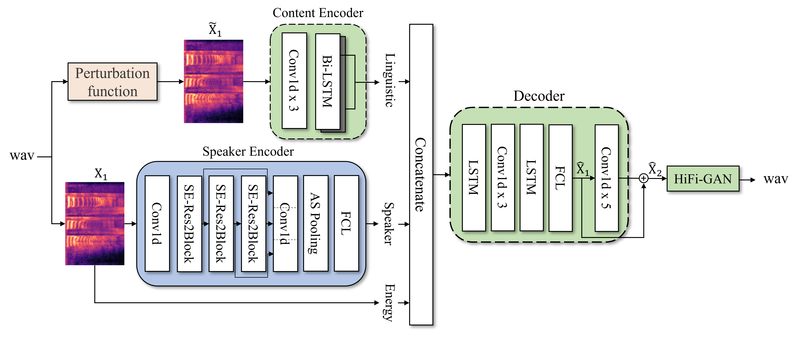
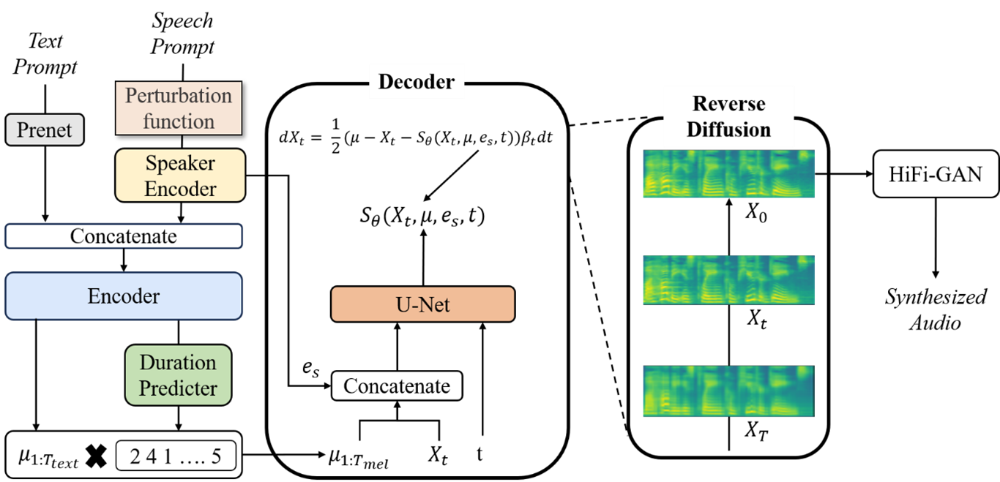
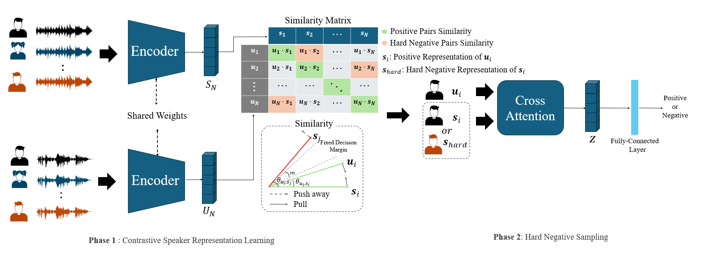

Zero-shot Voice Conversion
비병렬 데이터(Non-parallel data) 환경에서 정보 교란(Information Perturbation) 기법을 오토인코더에 적용하여, 언어 정보와 화자 정보를 효과적으로 분리(Disentanglement)하는 기술입니다. 기존 Bottleneck 방식의 한계를 극복하여 음성 품질 저하 없이 화자 유사도를 극대화하며, Diffusion 모델을 결합한 고품질 생성 모델로 확장 연구를 수행 중입니다.

Zero-shot Speech Synthesis
Diffusion 확률 모델 기반의 Grad-TTS를 개선하여, 학습 과정에서 보지 못한 화자(Unseen Speaker)의 목소리로도 즉시 발화가 가능한 Zero-shot Multi-Speaker TTS 기술입니다. Transformer 기반 텍스트 인코더와 Score-based Decoder를 결합하여 고속 샘플링과 자연스러운 운율 생성을 동시에 달성하는 것을 목표로 합니다.

Speaker Recognition
대조 학습(Contrastive Learning)과 하드 네거티브 샘플링(Hard Negative Sampling)을 결합하여 유사 화자 간의 식별 성능을 강화한 강건한 화자 인식 프레임워크입니다. CLIP의 One-to-Many 관계 학습 기법을 음성 도메인에 적용하여, VoxCeleb 등 대규모 데이터셋 환경에서 State-of-the-art 수준의 Representation 성능을 확보합니다.